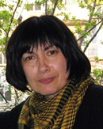

Пленарные докладчики ТМП 2016
Алена Витцлак-Макаревич
Аффилиация: Kiel University Текущая аффилиация: The Hebrew University of Jerusalem, Department of Linguistics, Faculty of Humanities Научные интересы: описание и объяснение лингвистического разнообразия, грамматические отношения, информационная структура, синтаксическая связь предложений, фонетика, анализ диалога, психолингвистика. Исследовательская деятельность:
Полевая работа:
|
Татьяна Геннадьевна Никитина (Gensling)Аффилиация: (не указана в программе) Текущая аффилиация: Доктор филологических наук, профессор ПсковГУ Научные интересы: дифференциальное маркирование подлежащего, информационная структура, народная фразеология, региональная лексикография, псковские говоры. Образование и карьера:
Профессиональная деятельность:
Дополнительно: Ударник в музыкальной группе «Отцы и дети» (Псков). |
Дмитрий Владимирович Сичинава (Gensling)
Аффилиация: (не указана в программе) Текущая аффилиация: Институт русского языка им. В. В. Виноградова РАН, НИУ ВШЭ Научные интересы: грамматическая типология, глагол, корпусная лингвистика, параллельные корпуса, сверхпрошлые времена в славянских языках. Образование и карьера:
Профессиональная деятельность:
|
Иван Игартуа и Нереа МадариагаАффилиация: University of the Basque Country Иван Игартуа:
Исследования Игартуа: историческая лингвистика, морфологическая типология, диахрония, историческая морфология славянских языков, реконструкция прото-баскского языка, историческая лексикография баскского языка. Автор дюжины книг и 76 статей в высокорейтинговых изданиях. Нереа Мадариага:
|